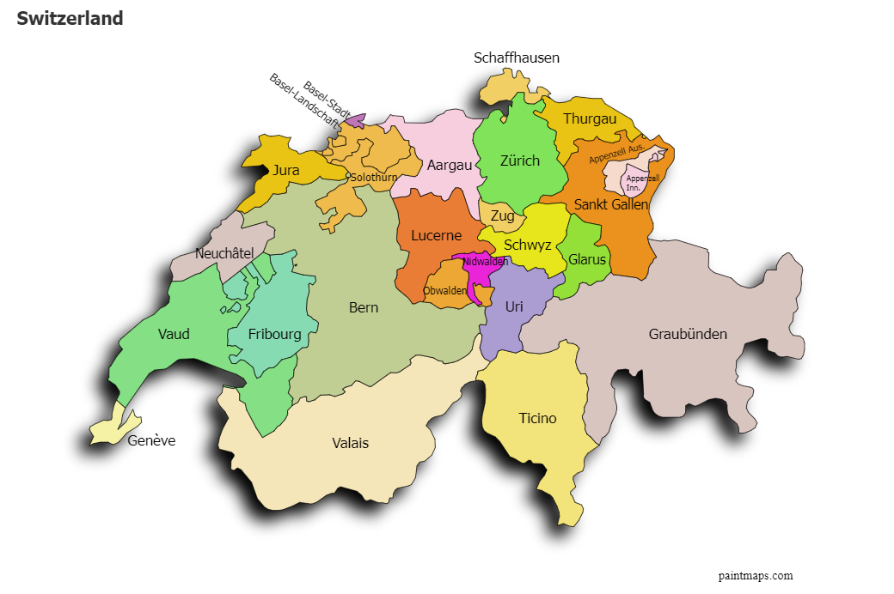
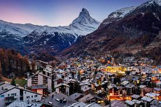
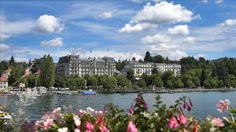
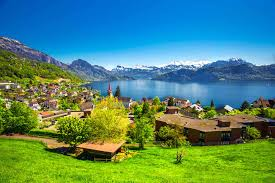

İsviçre
Başkent: Bern
Yüzölçümü: 41.290 km²
Nüfus: Yaklaşık 8 milyon
Para Birimi: İsviçre Frangı (CHF)
İsviçre, Orta Avrupa'da yer alan, dağlık arazisi ve dünya çapında ün kazanan bankacılık sistemi ile bilinen bir ülkedir. Zürih ve Cenevre gibi büyük şehirleriyle öne çıkar ve uluslararası organizasyonlara ev sahipliği yapar. İsviçre, dört resmi dilin konuşulduğu, çok kültürlü ve özgür bir ülkedir.

İklim ve Coğrafya
Coğrafya: İsviçre, Orta Avrupa'da yer almakta olup, çevresinde Fransa, Almanya, İtalya, Avusturya ve Lihtenştayn ile kara sınırlarına sahiptir. Ülke, Alpler Dağları'nın etkisiyle oldukça dağlık bir yapıya sahiptir. Ayrıca, çok sayıda gölet ve akarsu da İsviçre'nin doğal zenginlikleri arasında yer almaktadır.
İklim: İsviçre'nin iklimi, Alpler'in etkisiyle çeşitlenmiştir. Ülkenin güneyinde, İtalya'ya yakın bölgelerde daha ılıman bir iklim görülürken, kuzey ve dağlık bölgelerde daha soğuk iklim hakimdir. Kışlar genellikle soğuk ve kar yağışlı, yazlar ise ılıman geçmektedir. İsviçre, dağlık yapısı nedeniyle farklı iklim bölgelerini içinde barındırmaktadır.
Tarihi Gelişmeler
İsviçre'nin tarihi, bölgenin antik çağlara dayanan kökenlerine sahiptir. Orta Çağ'da, İsviçre bir dizi yerel konfederasyona bölünmüş ve 1291'de yapılan Eidgenossenschaft (İsviçre Konfederasyonu) anlaşmasıyla birleşmişlerdir. Bu, İsviçre'nin bağımsızlık yolundaki ilk adım olarak kabul edilir. 1515'teki Marignano Savaşı'nda Fransızlar'a karşı büyük bir yenilgiye uğrasalar da, dış dünyaya kapalı kalmayı tercih etmişlerdir. Bu dönemde, İsviçre’nin tarafsızlık politikası kökleşmiştir.
19. yüzyılda, özellikle 1848'deki anayasa kabulüyle, modern İsviçre devleti kurulmuştur. Bu anayasa, federal bir yapı kurarak, ülkedeki kantonların (bölgesel yönetimler) otonomilerini korumalarına imkan tanımıştır. Bu dönemde, İsviçre'nin bankacılık sistemi güçlenmiş ve ülkede sanayi devrimi başlamıştır.
İsviçre, I. Dünya Savaşı'nda tarafsızlık politikasını sürdürerek dışarıda kalmıştır. II. Dünya Savaşı sırasında da aynı şekilde tarafsız kalmayı başarmıştır. 20. yüzyılın ortalarında, İsviçre uluslararası diplomasi ve insani yardımda önemli bir rol üstlenmiş, Birleşmiş Milletler ve diğer uluslararası kuruluşlarda aktif bir şekilde yer almıştır.
Bugün, İsviçre'nin tarafsızlık politikası, dünya çapında tanınmış ve saygı duyulmuştur. Aynı zamanda ülke, küresel finans ve ekonomi alanında güçlü bir etkiye sahiptir. İsviçre’nin tarihi, her zaman özgürlük, bağımsızlık ve tarafsızlık ile anılmıştır.
Bayramlar:
İsviçre’nin en önemli milli bayramı 1 Ağustos Ulusal Gündür. Bu günde ülkenin dört bir yanında havai fişek gösterileri, konuşmalar, geleneksel müzikler ve fener alayları düzenlenir. Ayrıca dini bayramlar da yöresel kutlamalarla öne çıkar; Katolik kantonlarında Noel ve Paskalya süslemeleri ve etkinlikleri dikkat çeker.

Peynir Fondü:
İsviçre mutfağının en ikonik yemeklerinden biri olan fondü, eritilmiş peynirin ekmek parçalarına batırılarak yenmesiyle servis edilir. Özellikle kış aylarında ailelerin bir araya gelerek paylaştığı sıcak ve samimi bir gelenektir.

Yodel:
Alp dağları ile özdeşleşmiş olan yodel, inişli çıkışlı seslerle yapılan bir halk müziği tarzıdır. Özellikle kırsal bölgelerde hala icra edilir ve İsviçre kültürel mirasının önemli bir parçasıdır.


Zermatt - İsviçre
Zermatt, İsviçre'nin en popüler dağ kasabalarından biridir ve özellikle kayak ve dağcılıkla ünlüdür. Matterhorn Dağı'nın eteğinde yer alan bu kasaba, her yıl binlerce turist tarafından ziyaret edilmektedir. Zermatt, araç trafiğine kapalı olmasıyla da bilinir ve sakin atmosferi, zarif otelleri ve restoranları ile doğa severlere huzurlu bir kaçış sunar.

Cenevre Gölü - İsviçre
Cenevre Gölü, İsviçre'nin en büyük göllerinden biri olup, Fransız sınırına yakın bir konumda yer almaktadır. Göl, Cenevre şehrinin hemen yanında yer alır ve çevresinde birçok lüks otel, restoran ve park bulunur. Cenevre Gölü, özellikle tekne turları, su sporları ve eşsiz manzaralarıyla ünlüdür. Ayrıca, gölün kıyısındaki Mont Blanc Dağı'na bakan panoramik manzaralar, bölgeyi fotoğrafçılar ve doğa severler için cazip kılar.

Luzern Gölü - İsviçre
Luzern Gölü, İsviçre'nin en güzel göllerinden biri olup, Luzern şehri ile aynı ismi taşır. Alplerin eteklerinde yer alan bu göl, ziyaretçilerine olağanüstü dağ manzaraları sunar. Gölün etrafındaki köyler ve kasabalar, bölgenin tarihini ve kültürünü yansıtan zarif yapılarıyla ünlüdür. Ayrıca, Luzern Gölü çevresinde tekne turları ve doğa yürüyüşleri gibi çeşitli açık hava etkinlikleri yapılabilmektedir.